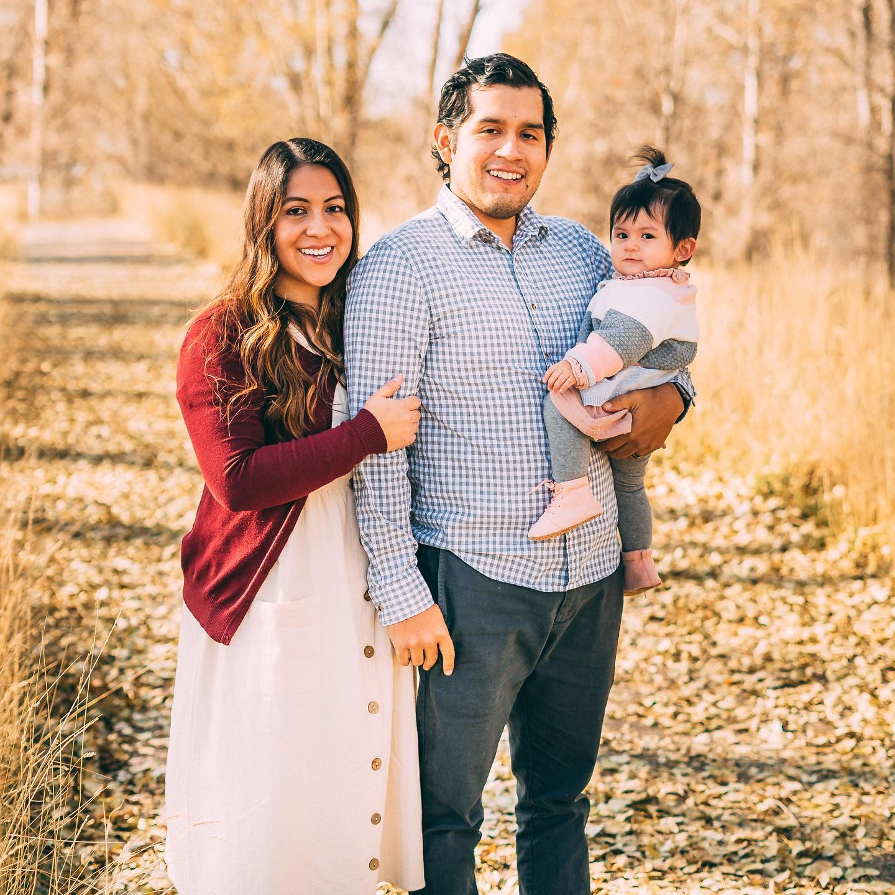

Bryan Calle
 Hello my name is Bryan Calle ('ll' makes the same sound as the 'll' in tortilla, I also help people by saying "Calle, like Yippie - Ki-yay")
I was born and raised in the State of New Jersey. In 2013, I served my mission in The Great Long Beach California Mission. I returned
to BYU-Idaho, in 2013. I graduated with my first Bachelors degree in 2018. It was for Marriage and Family Studies. I am starting again,
going for Bachelors in Applied Tech. I married my wife in winter of 2017, we had our daughter Naomi 2018, and now we have a 13 week old
puppy named Spot.
Hello my name is Bryan Calle ('ll' makes the same sound as the 'll' in tortilla, I also help people by saying "Calle, like Yippie - Ki-yay")
I was born and raised in the State of New Jersey. In 2013, I served my mission in The Great Long Beach California Mission. I returned
to BYU-Idaho, in 2013. I graduated with my first Bachelors degree in 2018. It was for Marriage and Family Studies. I am starting again,
going for Bachelors in Applied Tech. I married my wife in winter of 2017, we had our daughter Naomi 2018, and now we have a 13 week old
puppy named Spot.
We have decided to stay in Rexburg, because my wife is currently finishing up her degree in Accounting. My career path is to continue to practice
and learn more and more about programing. I then wish to join the development team within the company that I currrently work for. I wish to work
here for a few years to have on my resume a job that is longer than one year. I then wish to get a masters and/or a PHd, wish a degree that
I will be able to combine both of my Bachelors degree. I wish to use my skill in development and tech, to create something that will help families. extra
